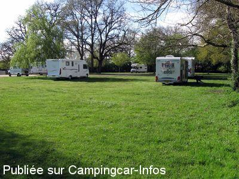

ASN = Aire de services avec stationnement nuit possible de :
MOULISMES
(N° 512)
Accès/adresse :
Route de Poitiers, N147
86500 MOULISMES
86500 MOULISMES
Latitude : (Nord) 46.33264° Décimaux ou 46° 19′ 57′′
Longitude : (Est) 0.80972° Décimaux ou 0° 48′ 34′′
Tarif : 2015
Stationnement gratuit
Services : 3 €
Jetons
Type de borne : EURO-RELAIS
Services :


Commerces
Restaurant
Autres informations :
Ouverte toute l'année.
50 emplacements
Tel Mairie +33 (0)549 919 064
Le 28/08/2010 par Thierry et Ingrid
Le 28/08/2010 par Thierry et Ingrid

Le 08/05/2009 par Marc
Le 09/03/2009 par Xtian74
de
Boris
le 23/10/2015 :
De passage en août 2015 , parking complet !!!
Super bruyant en été car beaucoup de camions, une vraie autoroute !!! le chemin d'accès est de moins en moins praticable car des trous partout !
Par contre , très bien hors saison !!
De passage en août 2015 , parking complet !!!
Super bruyant en été car beaucoup de camions, une vraie autoroute !!! le chemin d'accès est de moins en moins praticable car des trous partout !
Par contre , très bien hors saison !!
de
Thierry
le 23/08/2015 :
Nous avons passé la nuit sur cette aire le 7 aout, beaucoup de camping car, aire très pratique avec WC, la borne était HS.
Nous avons passé la nuit sur cette aire le 7 aout, beaucoup de camping car, aire très pratique avec WC, la borne était HS.
de
DUD Family
le 22/08/2013 :
de passage le 4 août 2013. Vaste aire très bien située pour y passer la nuit .Située tout près de l'axe principale , il vaut mieux se mettre au fond pour éviter les nuisances sonores .
Le cadre est agréable avec le plan d'eau .
Effectivement , il faut faire attention où l'on pose ses roues !
de passage le 4 août 2013. Vaste aire très bien située pour y passer la nuit .Située tout près de l'axe principale , il vaut mieux se mettre au fond pour éviter les nuisances sonores .
Le cadre est agréable avec le plan d'eau .
Effectivement , il faut faire attention où l'on pose ses roues !
de
J P Bedouet
le 24/06/2013 :
Ici, l'espace ne manque pas; mais, surtout en période pluvieuse, le parking devient en grande partie impraticable. Qu'attend-t-on pour étendre le tas de graviers présent depuis un moment et gênant certaines manoeuvres ?
Ici, l'espace ne manque pas; mais, surtout en période pluvieuse, le parking devient en grande partie impraticable. Qu'attend-t-on pour étendre le tas de graviers présent depuis un moment et gênant certaines manoeuvres ?
de
choupette
le 13/06/2012 :
Grande aire très agréable au bord d'un étang. Il est préférable de s'installer loin de la route (ceci est possible) car les camions circulent en permanence.
Sur l'aire possibilité de restauration rapide, toilettes, vidange.
A recommander.
Grande aire très agréable au bord d'un étang. Il est préférable de s'installer loin de la route (ceci est possible) car les camions circulent en permanence.
Sur l'aire possibilité de restauration rapide, toilettes, vidange.
A recommander.
de
rolandou81
le 20/08/2011 :
de passage le 18 08 2011, aire très agréable au bord d'un petit lac, qui donne envie d'y rester 24h de plus, un peu de bruit dû au passage des camions, mais si l'on peut se placer au fond de l'aire, ce n'est pas trop dérangeant.Merci
de passage le 18 08 2011, aire très agréable au bord d'un petit lac, qui donne envie d'y rester 24h de plus, un peu de bruit dû au passage des camions, mais si l'on peut se placer au fond de l'aire, ce n'est pas trop dérangeant.Merci
de
Michel et dominique
le 18/05/2011 :
Aire très sympa au bord d'un étang
calme la nuit malgré le passage de nombreux camions
Merci au marchand de frites pour sa sympathie
Aire très sympa au bord d'un étang
calme la nuit malgré le passage de nombreux camions
Merci au marchand de frites pour sa sympathie
de
gerard
le 10/03/2011 :
De passage cette semaine il y la borne des service hs et de plus cette aire est très mal signalée
De passage cette semaine il y la borne des service hs et de plus cette aire est très mal signalée
de
Pierre 62
le 11/07/2010 :
Aire très sympa, une étape recommandée, semble connue, en mai remplie le soir, restauration rapide sur place, encore bravo.
Aire très sympa, une étape recommandée, semble connue, en mai remplie le soir, restauration rapide sur place, encore bravo.
de
le 30/09/2009 :
Ca y est !!! le téléphone portable passe désormais sur cette aire. Merci encore à la municipalité pour cet endroit sympathique et accueillant (et ... gratuit).
Ca y est !!! le téléphone portable passe désormais sur cette aire. Merci encore à la municipalité pour cet endroit sympathique et accueillant (et ... gratuit).
de
Marc
le 08/05/2009 :
De passage mi-avril. Cadre superbe au bord de l'étang (attention aux grenouilles la nuit). Très calme au fond du terrain, pas de surcharge, la borne était réparée, tout y est parfait.
De passage mi-avril. Cadre superbe au bord de l'étang (attention aux grenouilles la nuit). Très calme au fond du terrain, pas de surcharge, la borne était réparée, tout y est parfait.
de
Annick/Alain
le 15/02/2008 :
Nous nous y arrêtons souvent. Aire très agréable, ne pas hésiter à aller au fond du parking très calme avec tables de pique-nique.
Nous nous y arrêtons souvent. Aire très agréable, ne pas hésiter à aller au fond du parking très calme avec tables de pique-nique.